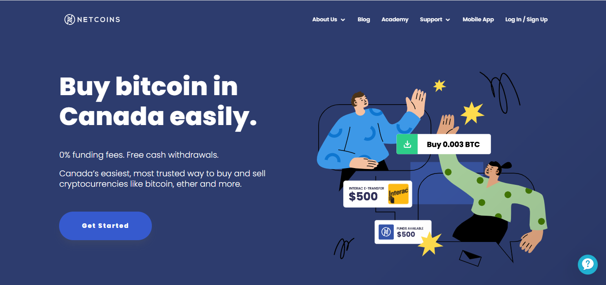

Canada Crypto Offerings As Of September 2021
Hi there. In this page I talk about available crypto exchanges for Canadians.
Yes there is Coinbase as an option for Canadians. I do not cover Coinbase here. I do refer to Canadian crypto exchanges as exchanges that have offices in Canada.
These days all the Canadian exchanges do require identity verification (Know Your Client/KYC).
Information is from the websites themselves.
Canadian crypto platforms at the time of writing are not as big as Binance, Kucoin, Coinbase, FTX, Huobi, etc. When I say that Newton has a large selection of coins, large means large for the Canada. It is still small compared to the bigger exchanges like Binance, Kucoin, etc. Selection of a crypto exchange based on crypto offerings may not matter if you plan to transfer cryptos to a larger exchange and convert into smaller cap altcoins.
## Topics
- Bitbuy
- Wealthsimple Crypto
- Newton Exchange
- VirgoCX
- Netcoins
- Coinberry
- Coinsquare
- Coinsmart
- NDAX
- Shakepay
- Notes
## Bitbuy
According to the Bitbuy website, Bitbuy is a Canadian owned & operated cryptocurrency platform in downtown Toronto. They provide a simple interface for both new traders and advanced traders.
Bitbuy users can buy and sell crypto as well as make deposits and withdrawals. Here are the available cryptocurrencies from Bitbuy.
- Bitcoin (BTC)
- Bitcoin Cash (BCH)
- Ethereum (ETH)
- XRP
- Stellar (XLM)
- EOS
- AAVE
- Chainlink (LINK)
- Litecoin (LTC)
Bitbuy has a products category in their website. The products are Express Trade, Pro Trade, Corporate, Over The Counter (OTC) and API. As I am not a Bitbuy user I would not know these products in great detail. I can show a screenshot of the Pro Trade section from Bitbuy.
Bitbuy clearly states their fees for deposits and withdrawals for crypto and for Canadian dollars in this page. Canadian dollar deposits and withdrawals have a minimum of $50 and a 24 hour maximum of $10 000 CAD with a 1.50% fee. For cryptos there are no deposit fees but they do have minimum withdrawals and withdrawal mining fees (screenshot below).
## Wealthsimple Crypto
Wealthsimple Crypto is one of five products offered by Wealthsimple. Wealthsimple provides smart, simple investing without high fees and account minimums. Their target audience is young millenials. The other Wealthsimple products are Invest, Cash, Trade (for stocks) and Wealthsimple Tax (formerly SimpleTax before acquisition).
In Wealthsimple Crypto, you can trade cryptos 24/7. (Well, the crypto market is 24/7 in the first place!) What they mean by trade is just buying and selling cryptos. They have a fairly large selection of cryptos and altcoins but a major con is that you are not able to withdraw cryptos into a digital or cold wallet.
Withdrawals and deposits are only in Canadian dollars. Cryptos purchased on Wealthsimple Crypto are stored in their app. They claim that the cryptos are held by Gemini Trust Company LLC TM.
Wealthsimple Crypto Selection
This exchange has a fair bit of altcoins on top of Bitcoin (BTC), Ethereum (ETH), Litecoin (LTC). They do not have Ripple (XRP) or Tether (USDT) but they have some Decentralized Finance (DeFi) coins/tokens. Here are their offerings.
- 0x (ZRX)
- 1inch (1INCH)
- Aave (AAVE)
- Balancer (BAL)
- Basic Attention Token (BAT)
- Bitcoin (BTC)
- Bitcoin Cash (BCH)
- Chainlink (LINK)
- Compound (COMP)
- Curve (CRV)
- Decentraland (MANA)
- Doge (DOGE)
- Ethereum (ETH)
- Fantom (FTM)
- Filecoin (FIL)
- Kyber Network (KNC)
- Litecoin (LTC)
- Maker (MKR)
- Polygon (MATIC)
- SushiSwap (SUSHI)
- Synthetix (SNX)
- Uma (UMA)
- Uniswap (UNI)
- Yearn.finance (YFI)
Not having the option of withdrawing cryptos from Wealthsimple Crypto into a wallet or hardware wallet is a big con. This service is more for people who care about buying, holding and selling higher on the exchange.
From this link, you can see the fees for Wealthsimple Crypto. There are zero fees except for operation fees of 1.5 to 2% per transaction. This fee is kind of big compared to the other Canadian crypto exchanges.
## Newton Exchange
As stated on their website, Newton is Canada’s first no-fee cryptocurrency brokerage. Although there are no fees they do have a spread between the buy price and sell price of cryptos. These spreads are close to 1% for many of the coins Newton has available. Check out the prices here.
Here is one example of Newton’s price. The buy price of Bitcoin is $61 150 CAD. The sell price is $60 306 CAD. Computing the difference of the buy price and sell price is $844 CAD. This 844 amount is about 1.38% of the buy price. As another example, with something like Uniswap a buy price of $32.90 CAD is linked with a sell price of $32.30 CAD. The difference between the buy and sell price is 60 cents which is 1.8% of the buy price. This is something to be mindful of.
When it comes to funding you can fund and withdraw easily. There are no fees for Interac, wire transfers and pre-authorized debit.
Newton Coin Offerings:
- Bitcoin (BTC)
- Ethereum (ETH)
- Cardano (ADA)
- Tether (USDT)
- Solana (SOL)
- XRP
- Terra (LUNA)
- TerraUSD (UST)
- OMG Network (OMG)
- Dogecoin (DOGE)
- Polkadot (DOT)
- USD Coin (USDC)
- Uniswap (UNI)
- Chainlink (LINK)
- Bitcoin Cash (BCH)
- Litecoin (LTC)
- Algorand (ALGO)
- Polygon (MATIC)
- Stellar Lumens (XLM)
- DAI
- EOS
- AAVE
- Fantom (FTM)
- Axie Infinity (AXS)
- Maker DAO (MKR)
- Compound (COMP)
- DASH
- Decentraland (MANA)
- Enjin (ENJ)
- SUSHI
- Synthetix (SNX)
- Yearn.Finance (YFI)
- Basic Attention Token (BAT)
- Curve (CRV)
- Ox (XRV)
- 1INCH
- Pax Gold (PAXG)
- Kyber Network (KNC)
- Balancer (BAL)
- QCAD
## Netcoins
Netcoins was founded in 2014 and started out a Virtual Bitcoin ATM solution. They have pivoted into a cryptocurrency trading platform. According to their story page their president Mitchell Demeter founded the world’s first Bitcoin ATM.

Their coin offerings is not very big compared to Newton & Wealthsimple Crypto. If you want some other altcoins you would have to look somewhere else. You could purchase Litecoin or XRP first and then transfer them to Binance, Kucoin and convert them into altcoins.
- Bitcoin
- Ethereum
- Tether (USDT)
- Litecoin
- Bitcoin Cash
- XRP
On Netcoins there are 0% funding fees. Funding can be done with crypto deposits, Interac, online bill payment or a bank wire transfer. It is free to fund, always. The verification process for Canadians is quite fast which is a nice bonus.
On the fees page they do charge a flat rate of 0.5% fee for every trade. They have no cash withdrawal fees. Here are their crypto withdrawal fees.
| Crypto | Withdrawal Fee |
|---|---|
| Bitcoin | 0.0005 BTC |
| Ethereum | 0.005 ETH |
| Tether | 20 USDT |
| XRP | 0.02 XRP |
| Litecoin | 0.02 LTC |
| Bitcoin Cash | 0.001 BCH |
| QCAD | 0 QCAD |
## Coinberry
Coinberry was founded in 2017 and claims to be the most safest and most secure FINTRAC registered platform for buying Bitcoin, Ethereum, Litcoin, XRP, Stellar and Cardano. They have desktop and mobile platforms for buying, selling, withdrawing and depositing crypto.

Coinberry’s Coin Offerings
- Bitcoin
- Ethereum
- Bitcoin Cash
- Litecoin
- Stellar
- Cardano
- XRP
- Dogecoin
- Curve
- Kyber Network
- Polkadot
- Synthetix
- Yearn Finance
- AAVE
- Balancer
- Uniswap
- Basic Attention Token
- Chainlink
- Compound
When it comes to fees Coinberry has zero deposit and withdrawal fees in Canadian dollars. Their spreads is between 0 and 2.5%.
Although Coinberry has a decent selection of coin offerings, only a few of the cryptos can be withdrawn into another exchange or wallet. I had to go to Coinberry’s help page to find this information. Check here or the table below for withdrawal fees and minimums. Here is the page for how to withdraw crypto.
| Crypto | Minimum Withdrawal | Mining Network Fees |
|---|---|---|
| Bitcoin | 0.001 BTC | dynamic |
| Ethereum | 0.02 ETH | dynamic |
| XRP | 25 XRP | dynamic |
| Litecoin | 0.05 LTC | 0.02 |
## Coinsquare
Coinsquare is another Canadian exchange which claims that it is the most secure trading platform. They have a customer-driven experience with low & transparent fees and no trading minimum.
They have a quick trade option which is for easy trading. The maximum for instant deposits is $10000 CAD. With the advanced trading platform, you have market chart data, limit orders and order books.
From Coinsquare’s funding options page, there are no fees for funding but there are fees for withdrawal options. The fees are 2% for Direct Bank Deposit, Wire transfers, Rushed wires and a 1% fee for Wealth Wires.
Coinsquare Crypto Offerings
- Bitcoin
- Ethereum
- Litecoin
- Bitcoin Cash
- Bitcoin Cash SV
- Dogecoin
- DASH
- XRP
- Ethereum Classic
- Stellar
## Coinsmart
Coinsmart is a Canadian crypto exchange that does plan to expand to other countries. They claim that they made crypto simple. Create an account and get verified in minutes as it states on the main page.
For the funding options there is a 1.5% fee for interac e-Transfer on amounts from $100 to $1999 CAD and zero fees for $2000 CAD and above. Bank wires and bank drafts have 0% fees. Coinsmart is one of the few Canadian exchanges to have credit card funding. Funding from credit or debit cards have a fee up to 6%.
For fiat withdrawals there is a 1% fee for Electronic Funds transfers and for bank wires.
Coinsmart Coin List
- Bitcoin
- Ethereum
- Litecoin
- XRP
- Bitcoin Cash
- EOS
- Tether
- USD Coin
- Stellar
- Cardano
Crypto withdrawal fees do vary depending on the coin. Bitcoin, Ethereum, Tether, and USDC withdrawals would be expensive.
Trading fees are 0.20% for a single trade and 0.30% for a double trade. A single trade refers to a trade where one of the cryptocurrencies is Bitcoin. A double trade refers to a trade where the two cryptocurrencies does not include Bitcoin. The terminology of single trade and double trade is weird.
## NDAX
On their main page, it mentions that NDAX was built to simplify cryptocurrency trading for everyone. They have an intuitive platform for beginners and they also have advanced features and trading tools for more experienced and professional traders.
Funding dollars and crypto into NDAX is free. The withdrawal fees are on the higher side. It costs $25 CAD for bank drafts and for wire transfers. Like with the other Canadian exchanges, Bitcoin withdrawals along with Ethereum based crypto withdrawal. What stands out for me in a not so good way is the withdrawal fees for Litecoin at 0.0499 LTC, XRP withdrawal fee at 3XRP & Stellar at 8XLM. Compared with Netcoins, Netcoins has a withdrawal fee for LTC at 0.02LTC and XRP at 0.02XRP.
NDAX does have a decent selection of cryptos for Canadians.
NDAX Available Cryptos
- Bitcoin
- Litecoin
- Ethereum
- XRP
- EOS
- Stellar
- Dogecoin
- Cardano
- Tether
- Chainlink
- Polkadot
- Uniswap
- The Graph
- Compound
- AAVE
- MATIC
## VirgoCX
VirgoCX is a platform founded in 2018 that is made for both aspiring and expert crypto traders. They provide easy and affordable access for all Canadians to buy and sell crypto. They have zero trading fees, instant funding with Interac and 24/7 Live Support.
VirgoCX Coin Offerings
- Bitcoin (BTC)
- Ethereum (ETH)
- Tether (USDT)
- Dogecoin (DOGE)
- Uniswap (UNI)
- Bitcoin Cash (BCH)
- Litecoin (LTC)
- Chainlink (LINK)
- Stellar (XLM)
VirgoCX also has a mobile application from the Apple App Store and Google Play.
If you look at the fee page from VirgoCX there are no deposit fees and zero trading fees but there are fees for withdrawals. There is a 0.5% fee for withdrawals in either Canadian or US Dollars.
## Shakepay
Shakepay was the first Canadian crypto service that I used. At the time I first used it at around 2018, there was no Know Your Client (KYC) verification. In 2021, they do require KYC verification along with the other Canadian crypto exchanges.
Shakepay allows customers to buy and sell Bitcoin and Ethereum. There are no other available coins. From their website, their claim is that are no fees and it is instant. You can do Interac e-Transfer from $5 to $10000 CAD, wire transfers with no fee of amounts of at least $5000. Miner fees are covered by Shakepay as well as gas fees. They do have a price difference of the buy price and sell price for BTC or ETH (link).
For those who only care only about BTC and ETH, Shakepay has simplicity which is something to consider.
## Summary & Notes
An exchange can claim transparency with the fees and other items. Do watch for the small print.
If multiple exchanges claim that they have the best crypto prices, then which one truly has the best prices?
Wealthsimple Crypto does have a large selection of cryptos. However, the transaction fees are large and there is no withdrawal of cryptos to another exchange or wallet. It is only buy, hold and sell for Wealthsimple Crypto.
NDAX has a decent selection of cryptos but there have some high withdrawal fees.
Newton has a large selection of coins but do be careful of the price spreads.
VirgoCX stands out with the zero trading fees which is nice. The main con is the 0.5% fee for withdrawals in CAD or USD. I do wonder if the crypto prices are good to justify the zero trading fees.
Shakepay is only for Bitcoin and Ethereum. You can buy, sell and withdraw BTC or ETH. Transaction fees in the past for Bitcoin and Ethereum were low. It was not expensive to withdraw BTC and ETH to another exchange or to a wallet. Now that network fees in 2021 are a bit crazy for BTC and ETH, it is costly to move BTC and ETH to another exchange or wallet.
A lot of the Canadian crypto sites are similar to each other. You would have to look at reviews when it comes to find the right exchange(s) for you.